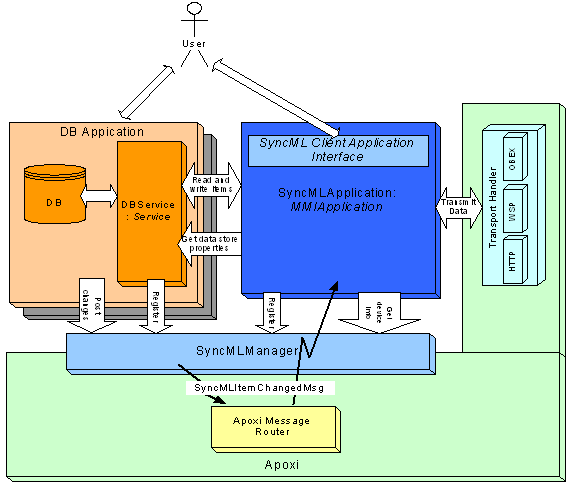

SyncML Overview
1 Introduction
A SyncML (Synchronization Markup Language) application has the task to synchronize databases on the mobile device with servers based on the SyncML protocol. To be part of APOXI, the SyncML application implementation has to rely on several interfaces, in particular, interfaces to the mobile device and interfaces to the databases.
There are components which are integrated into the APOXI framework and allow SyncML applications to work in APOXI, and there are class header definitions which must be implemented for database applications to provide access to the database for synchronization purposes.
2 Architecture
The following figure (Figure 1) depicts the software architecture of a SyncML client application which runs on the mobile device and is integrated into APOXI. As one can see, the SyncML application interacts with several components and the user. The user interacts with the SyncML application through a user interface. The user initiates synchronization processes for synchronizing a database with a remote server. The user also interacts with the database applications and makes changes in the databases.
 |
Figure 1. SyncML Architecture
SyncML application does the synchronization, i.e., it reads device and database properties, reads and writes data from the data bases, builds and interprets the SyncML messages and interacts with the transport layer to receive and transmits SyncML messages. It accesses the databases exclusively through DBService interface components.
2.1 SyncMLManager
The SyncMLManager component is a singleton which is integrated as a fixed part into the APOXI framework . The SyncMLManager serves the following purposes:
2.2 APOXI MessageRouter
The APOXI MessageRouter routes DBItemChangedMgs posted by the database applications through the SyncMLManager to the SyncML application. The SyncML application then can maintain the change log required for sychronization.
2.3 DBService
The DBService interface is the interface for the SyncML application for accessing databases. Any database which should be synchronized by the SyncMLApplication has to provide its own DBService component. DBService is a specialization of the APOXI Service class. Therefore DBServices are part of the Service framework and register with the APOXI service broker.